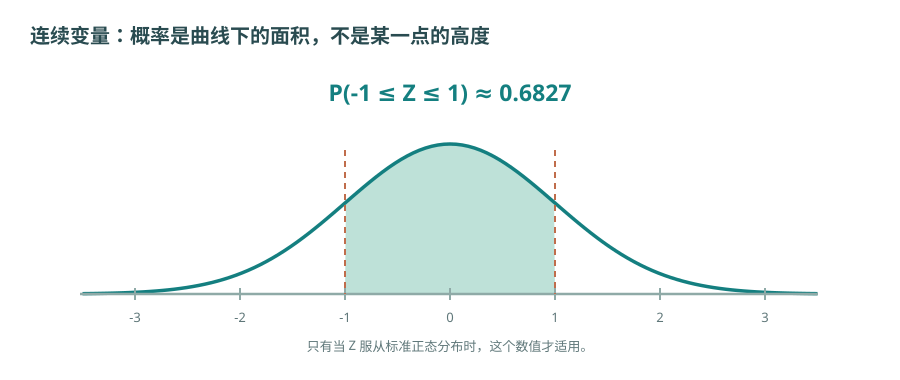
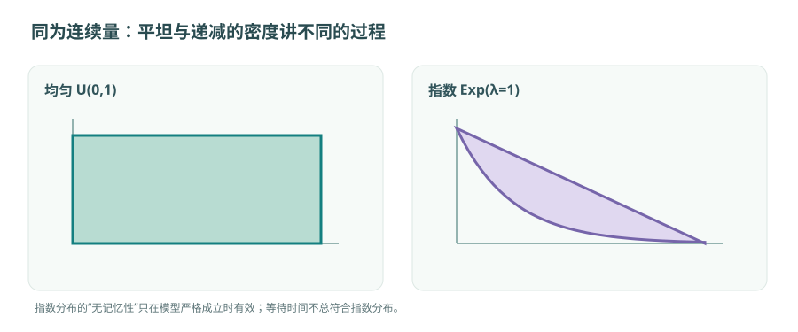

常见概率分布：先理解随机机制
为什么“五次中成功两次”和“十分钟中发生两次”需要两种公式？为什么正态曲线上的一个高度并不是概率？选择概率分布之前，先明确数据产生的机制。
01 · 先判断：在计数，还是在测量？
对于随机变量，首先问“结果有多少种数值可能”。一段时间内收到多少条消息，是离散计数；两次消息之间等待多少秒，在理想化测量下是连续量。两者的分布函数、概率语义与适用条件不一样。
| 分布 | 观测目标 | 参数 | 主要假设 |
|---|---|---|---|
| 二项 | 固定试验次数中的成功数 | n, p | 独立、两类结果、固定 p |
| 泊松 | 固定暴露窗口中的事件计数 | λ | 平均发生率稳定、独立增量等 |
| 正态 | 连续数值 | μ, σ>0 | 采用对称钟形的密度模型 |
| 均匀 | 区间中等密度位置 | a,b | 指定区间内密度常数 |
| 指数 | 下一事件的等待时间 | λ>0 | 恒定风险率／无记忆性 |
02 · 二项分布：固定 n 次独立试验
想象独立完成五次同类操作，每次“成功”的概率都为 p=0.4。令 X 为总成功次数，则 X~Binomial(5,0.4)。有且只有 0–5 这六种数值；其中恰好两次成功有 C(5,2)=10 种排列。
代入 n=5、k=2、p=0.4：P(X=2)=10×0.4²×0.6³=0.3456。均值 E[X]=np=2，方差 Var(X)=np(1−p)=1.2。假如每次成功率不同或试验结果互相影响，则不能机械使用同一个二项模型。
03 · 泊松分布：固定窗口中的计数
假设某模拟服务的告警按固定平均率且满足泊松过程相关条件，十分钟内平均发生 λ=2 次。则同样是计数，却没有最多发生五次的硬上界：X~Poisson(2)。
恰好两次发生的概率为 e⁻²·2²/2!=约 0.2707；泊松分布满足 E[X]=Var(X)=λ。若观测到方差显著大于均值（过度离散）、存在集中爆发或随时段变化的发生率，就要检查模型，而不是强迫数据满足泊松。

04 · 正态分布：连续密度必须积分
正态分布 N(μ,σ²) 常用于在合适情境下描述连续量的对称波动。但它是数学模型，不能说自然界所有事物都呈正态。图中标准正态 Z~N(0,1)，曲线下 -1 到 1 的面积约 0.6827。

用 z=(x−μ)/σ 把任意正态变量转成标准正态后才能使用标准正态表；若原数据不是正态，仅做 z-score 不会自动把其分布变成正态。
05 · 均匀与指数：概率面积与等待时间

U(0,1) 区间 [0.2,0.5] 的概率是 0.3；若 T~Exp(λ)，其生存函数表示“等待时间超过 t”的概率：
指数分布的无记忆性意味着 P(T>s+t|T>s)=P(T>t)。对于真正的恒定率泊松过程，计数服从泊松、相邻事件等待时间服从指数分布；真实机器故障、用户访问、排队通常需要先检验该假设。
06 · 中心极限定理不是“所有数据都会变正态”
中心极限定理讨论的是独立同分布、方差有限等条件下，规范化样本均值的抽样分布随着 n 增长趋近标准正态，而不是把单个原始样本点本身变正态。收敛速度取决于总体偏态与尾部等特征，不能机械认定“n=30 就足够”。
本章与下一章的衔接
本章讲“随机变量 X 本身服从什么分布”；第 08 篇讲“从同一个总体不断抽样时，统计量 X̄ 本身服从什么分布”。两者绝不是同一个东西。
07 · 改变成功率，观察二项尾部事件
让五次独立试验的成功率在 0%–100% 之间变化，观察“至少成功三次”的概率。n 固定为 5，使用精确二项求和，不做模拟近似。
二项分布 P(X≥3)
至少 3 次成功的概率：31.744%
from math import comb, exp, factorial
p, n = 0.4, 5
tail = sum(comb(n,k)*p**k*(1-p)**(n-k)
for k in range(3, n+1))
print(round(tail, 5)) # 0.31744
print(round(exp(-2)*2**2/factorial(2), 5)) # 0.27067自我检查
问题：如果每次试验成功概率随次数变化，二项公式还能原封不动使用吗？
答案：不能。p 不再恒定时即使各试验独立，成功总数也不再服从同参二项分布；可能需要泊松二项分布等模型。
08 · 参考资料
- OpenStax · Binomial Distribution：条件与方差。
- OpenStax · Poisson Distribution：固定区间的计数分布。
- OpenStax · Exponential Distribution：等待时间。
- OpenStax · Standard Normal Distribution：标准正态与经验法则。
所有具体概率参数均为示例设定；模型与数据是否匹配必须另行评估。